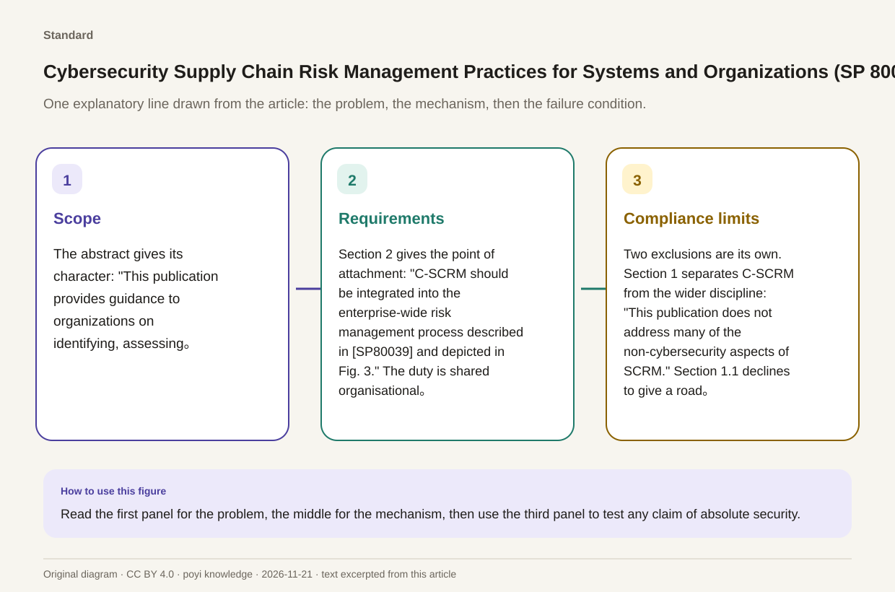
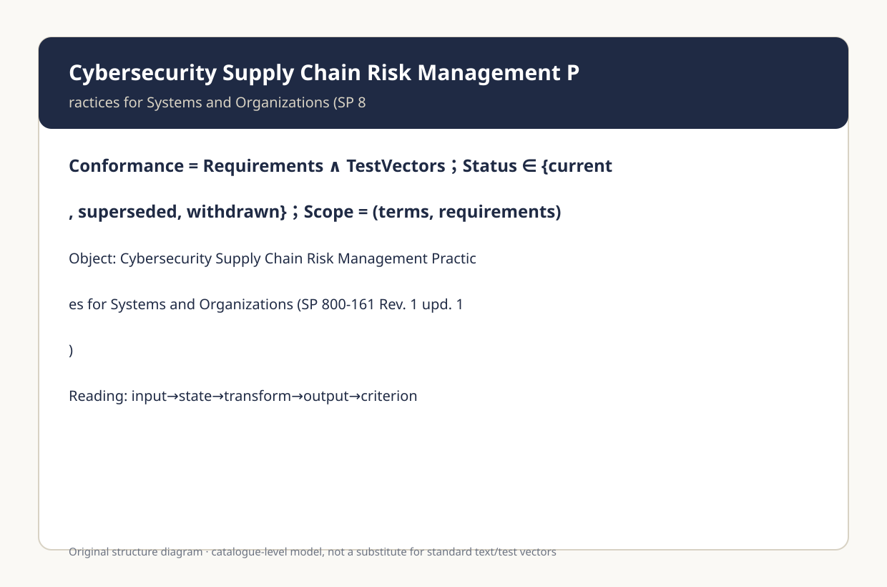

Principles
Standard: Cybersecurity Supply Chain Risk Management Practices for Systems and Organizations (SP 800-161 Rev. 1) (网络安全供应链风险管理实践（SP 800-161）). The abstract gives its character: "This publication provides guidance to organizations on identifying, assessing, and mitigating cybersecurity risks throughout the supply chain at all levels of their organizations." The method is integration into existing risk management: "The publication integrates cybersecurity supply chain risk management (C-SCRM) into risk management activities by applying a multilevel, C-SCRM-specific approach". Section 1.1 defines the term: "Cybersecurity Supply Chain Risk Management (C-SCRM) is a systematic process for managing exposure to cybersecurity risks throughout the supply chain and developing appropriate response strategies, policies, processes, and procedures." In order the three quotations give the character of the document, its method and its definition: guidance for organizations, delivered by embedding C-SCRM in existing risk management and working it through the levels, with the managed object stated as exposure together with response strategies, policies, processes and procedures.

Why it matters
The starting point is the acquirer's lack of visibility. The abstract opens: "Organizations are concerned about the risks associated with products and services that may potentially contain malicious functionality, are counterfeit, or are vulnerable due to poor manufacturing and development practices within the supply chain." and attributes it to unseen processes: "These risks are associated with an enterprise's decreased visibility into and understanding of how the technology they acquire is developed, integrated, and deployed". Section 1 therefore defines the object first: "In this document, the term supply chain refers to the linked set of resources and processes between and among multiple levels of an enterprise, each of which is an acquirer that begins with the sourcing of products and services and extends through the product and service life cycle." The quotations separate two layers: products and services may carry malicious functionality, be counterfeit, or be weakly built, and the acquirer cannot see how the technology is developed, integrated and deployed. The §1 definition adds that every level of the chain is itself an acquirer.
Applications
Section 2 gives the point of attachment: "C-SCRM should be integrated into the enterprise-wide risk management process described in [SP80039] and depicted in Fig. 3." The duty is shared organisationally: "Implementing C-SCRM requires enterprises to establish a coordinated team-based approach and a shared responsibility model to effectively manage cybersecurity risks throughout the supply chain." and cross-functional input is advised in should-aim-to terms: "Enterprises should aim to infuse perspectives from multiple disciplines and processes". Section 1.4 routes readers, telling enterprise risk owners: "The entire document is relevant to and recommended for readers fitting this profile." The subject of all three sentences is the enterprise itself: attach C-SCRM to the existing risk management process, build a coordinated team with a shared responsibility model, and infuse perspectives from several disciplines; the §1.4 reading routes are guidance.

Limits & attacks
Two exclusions are its own. Section 1 separates C-SCRM from the wider discipline: "This publication does not address many of the non-cybersecurity aspects of SCRM." Section 1.1 declines to give a roadmap: "However, this publication does not offer a specific roadmap for enterprises to follow to reach various states of capability and maturity." and warns against copying it verbatim: "The C-SCRM guidance provided in this document is not one-size-fits-all." The first two mark a subject boundary and the third a method warning: the practices must be tailored to the size, resources and risk situation of each enterprise. A separate limit belongs to this retained copy: the masthead reads "May 2022 INCLUDES UPDATES AS OF 11-01-2024; SEE APPENDIX K", while the text held here stops at the responsibility table in section 2.3.1, so the key practices of Section 3 and the Appendix K named there are outside this file and their contents are not asserted.
History
The first masthead line reads "NIST Special Publication 800 NIST SP 800-161r1-upd1", the date line reads "May 2022 INCLUDES UPDATES AS OF 11-01-2024; SEE APPENDIX K", and the DOI line reads "This publication is available free of charge from:" followed by the DOI 10.6028/NIST.SP.800-161r1-upd1. The publication history block records the review and the supersession: "Approved by the NIST Editorial Review Board on 2024-09-25 Supersedes NIST Special Publication 800-161r1 (May 2022)", and the citation line gives the six authors, the year and the note "Includes updates as of November 1, 2024." followed by "Boyens J, Smith A, Bartol N, Winkler K, Holbrook A, Fallon M (2022) Cybersecurity Supply Chain Risk Management Practices for Systems and Organizations." The acknowledgements also name the 2015 edition's authors: "the original authors of NIST SP 800-161, Celia Paulsen (NIST), Rama Moorthy (Hatha Systems), and Stephanie Shankles". All of these quotations come from the front matter of the retained text and give one timeline: the May 2022 first revision, the updates incorporated as of 1 November 2024, the editorial approval of 25 September 2024, and the superseded SP 800-161r1.
Worked example & verification
Formal model and reproduction steps
[S=\min_i S_i,\quad S_i\in{\text{密钥强度},\text{分组安全},\text{实现安全}}]
Cybersecurity Supply Chain Risk Management Practices for Systems and Organizations (SP 800-161 Rev. 1 upd. 1): the registered public parameters, key material or randomness, and message are mapped through the stated transformation to an output checked against the registered criterion. The worked example is a structural reproduction, not a new test vector; parameter ranges, standard versions and implementation details remain source-bound.
References
- Wikipedia search entry for 网络安全供应链风险管理实践（SP 800-161）. https://zh.wikipedia.org/w/index.php?search=%E7%BD%91%E7%BB%9C%E5%AE%89%E5%85%A8%E4%BE%9B%E5%BA%94%E9%93%BE%E9%A3%8E%E9%99%A9%E7%AE%A1%E7%90%86%E5%AE%9E%E8%B7%B5%EF%BC%88SP%20800-161%EF%BC%89
- Handbook of Applied Cryptography (Menezes, van Oorschot, Vanstone). https://www.cacr.math.uwaterloo.ca/hac/